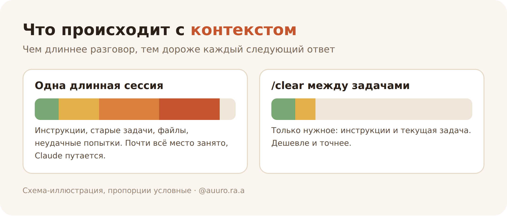
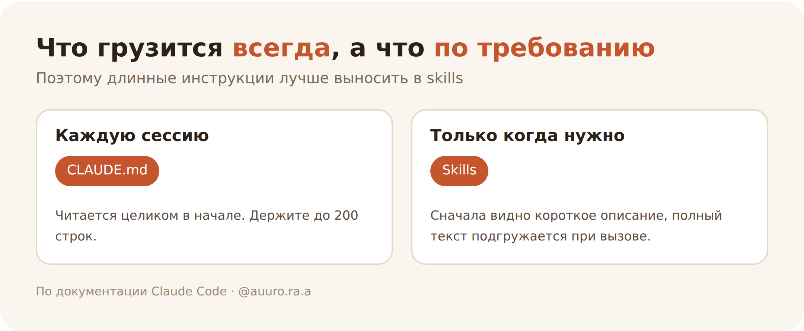
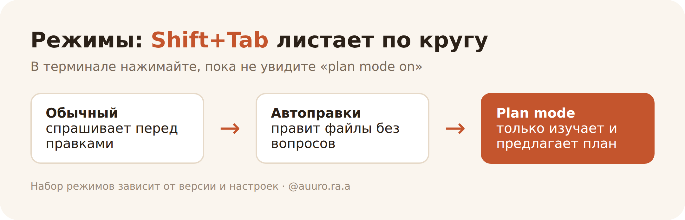
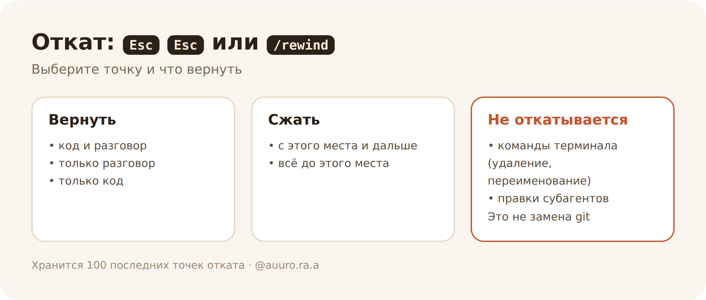
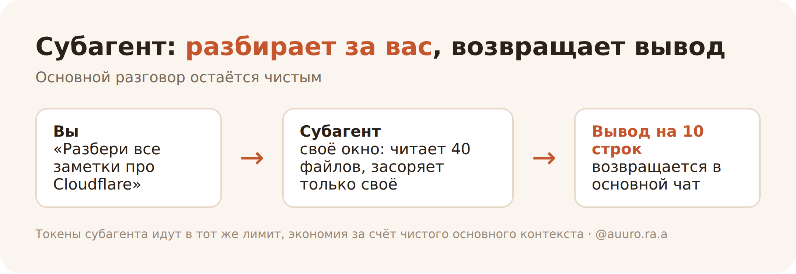
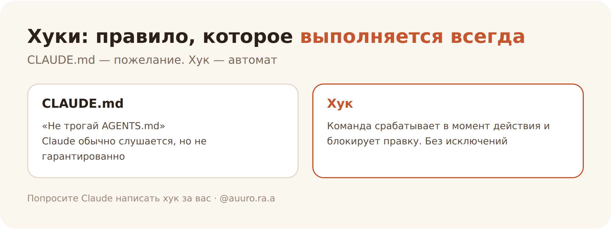

01 Главная мысль: контекст
Claude Code не только для программистов. Он работает в любой папке: с заметками, документами, текстами. Поэтому приёмы ниже полезны и тем, кто код не пишет.
Рабочая память нейронки (контекст) быстро заполняется, а чем она полнее, тем дороже каждый ответ и тем чаще Claude путается. Почти все приёмы про одно: держать контекст чистым и давать Claude проверяемую задачу.

Токен — кусочек текста, примерно слово или его часть. Нейронка тратит токены на всё, что читает и пишет, а у подписки есть лимит.
Контекст — вся переписка плюс все файлы и результаты команд, которые Claude открыл в этом разговоре. С каждым запросом он отправляется целиком (кэш удешевляет это, но всё равно считается). Поэтому сессия «на целый день» может съесть лимит, даже если вы задаёте короткие вопросы.
Команды с / (слеш-команды) вводятся в поле чата. Они не зависят от того, программируете вы или нет.
02 Часть 1. Токены: как тратить меньше
1. Файл CLAUDE.md: инструкция для нейронки
Обычный текстовый файл в корне папки. Claude читает его в начале каждой сессии, и вам не нужно каждый раз объяснять одно и то же.

Что туда писать:
- как называть файлы;
- куда что складывать;
- какой тон в текстах;
- чего нельзя трогать;
- команды и привычки, которые Claude не угадает сам.
Что туда не писать:
- то, что Claude и так увидит в файлах;
- общие банальности вроде «пиши аккуратно»;
- длинные инструкции и справочники (лучше ссылка);
- то, что часто меняется.
Спросите: «Если убрать эту строку, Claude начнёт ошибаться?» Если нет, строку убираем. Раздутый файл хуже короткого: важные правила тонут, и Claude начинает их игнорировать.
Что ещё знать:
- Файл загружается каждую сессию и занимает место в контексте, то есть тоже стоит токенов. Ориентир документации: не больше 200 строк.
- Это инструкция, а не запрет. Железные правила настраиваются отдельно (хуки, см. приём 16).
- Если какое-то правило Claude стабильно пропускает, добавьте к этой строке слово IMPORTANT. Если выделить всё, не будет выделено ничего.
- Заготовка:
/init. Проверить, что файл подхватился:/context. Предложить, что убрать из файла:/doctor(Claude предложит вырезать то, что и так видно из файлов проекта). Поиск устаревших и противоречащих друг другу инструкций:/doctor prompt-audit(нужна версия v2.1.283 или новее). - Подробные инструкции «на один сценарий» (например, как оформлять пост) лучше вынести в skill (приём 15): он грузится только когда нужен.
- Можно добавить раздел «Compact instructions»: что сохранять при сжатии разговора (см. приём 3).
Claude Code умеет читать AGENTS.md сам (нужна версия v2.1.277 или новее). Правило такое:
- есть только
AGENTS.md, аCLAUDE.mdнет: Claude читаетAGENTS.md, ничего настраивать не надо; - есть оба файла: Claude читает только
CLAUDE.md. Чтобы подтянуть иAGENTS.md, напишите вCLAUDE.mdстроку@AGENTS.md; - есть
AGENTS.mdи личныйCLAUDE.local.md: он тоже считается, поэтомуAGENTS.mdне читается. Тот же выход: импорт через@AGENTS.md; - на версиях до v2.1.281 в некоторых сессиях (например, через Amazon Bedrock) читаются только файлы
CLAUDE.md. Там помогает тот же импорт, либо обновление Claude Code.
Проверка: в начале сессии Claude Code показывает строку вроде no CLAUDE.md found; AGENTS.md loaded: ....
2. /clear, /rename и /resume: чистый лист между задачами
Одна задача — одна сессия. Если вы переключились на другое, а старый разговор остался, он продолжает расходовать токены на каждом шаге.
- Закончили задачу —
/clear. Контекст сбрасывается, счётчик расхода тоже. - Хотите вернуться к разговору позже — сначала
/rename название, потом/clear. Вернуться:/resume. - Claude дважды не понял и вы поправляете в третий раз — не спорьте дальше. Контекст уже забит неудачными попытками. Лучше
/clearи новый, более точный запрос с учётом того, что выяснили.
Если очистили по ошибке. В меню /rewind (приём 12) появится пункт возврата в разговор до /clear. Он доступен, пока вы не закрыли Claude Code.
3. /compact: сжать разговор, но не потерять главное
Когда продолжать нужно, а контекст разросся, разговор можно сжать в краткое содержание.
- Просто
/compact. - С уточнением, что сохранить:
/compact Сфокусируйся на решениях и списке изменённых файлов. - Claude и сам сжимает разговор автоматически, когда место заканчивается.
- Сжать только часть:
Escдважды или/rewind, выберите сообщение, затем «Summarize from here» (сжать всё после него) или «Summarize up to here» (сжать всё до него).
Нюанс. Сам /compact читает весь разговор, поэтому на огромном контексте это тоже большой запрос. Если продолжение не нужно, /clear бесплатнее.
4. /context и /usage: посмотреть, куда уходят токены
Без цифр экономить вслепую. Три команды:
/contextпоказывает, что занимает место в контексте: файлы инструкций, подключённые инструменты, переписка./usageпоказывает расход сессии и (на тарифах Pro, Max, Team, Enterprise) разбивку: сколько ушло на skills, субагентов, плагины и отдельные MCP-сервисы. Там же флаги вроде «долгий контекст» или «промахи кэша», если такое поведение съедает от 10% недавнего расхода./insightsделает отчёт о том, как вы работаете с Claude: где он вас не понял, что можно улучшить.
Важно. Цифры в долларах в /usage рассчитаны по прайсу API и нужны скорее пользователям API. У подписки Pro/Max расход входит в тариф, смотрите полоски лимитов.
Почему расход растёт в длинной сессии. Каждый запрос тащит с собой всю историю. Если вы вернулись к старой сессии после долгого перерыва, кэш мог устареть, и Claude заново обрабатывает весь контекст. Документация: срок жизни кэша час на подписке и пять минут при API-ключе. Пять минут также на подписке, когда вы тратите дополнительные кредиты (на 19.10.2026, проверяйте актуальное). В /usage есть строка про кэш: сколько запросов обошлось без него и тёплый ли он сейчас (нужна v2.1.251 или новее).
5. Модель и /effort: не берите самое мощное на всё
/modelпереключает модель прямо во время сессии. Более лёгкая хватает для большинства задач, самую сильную оставьте для сложных рассуждений. Подписка и цены меняются, смотрите актуальные./effortрегулирует, насколько долго нейронка «думает». Размышления тоже считаются как токены ответа. Для простых задач уровень можно снизить.- Для субагентов (приём 14) можно назначить более дешёвую модель.
6. Конкретные запросы вместо «улучши всё»
Расплывчатая просьба заставляет Claude перебирать множество файлов, а это токены.
| Плохо | Хорошо |
|---|---|
| «Улучши этот текст» | «Сократи вступление в @Статьи/черновик.md до 3 предложений, тон оставь» |
| «Исправь ошибку» | «Сайт не открывается после обновления, вот текст ошибки. Найди причину, не заглушай ошибку» |
| «Сделай красиво» | «Вот скриншот макета. Сделай так же и сравни результат с оригиналом» |
Формула. Что именно (файл), что должно получиться, чего не трогать. Если вы изучаете, расплывчатый вопрос допустим, но тогда будьте готовы поправить курс.
7. @: ссылка на файл или папку
Напишите @ и начните вводить путь. Например: «Сократи текст в @Статьи/черновик.md». Claude читает файл перед ответом и не тратит токены на поиск. Для папки в разговор попадает список файлов, а не их содержимое. Можно сослаться на несколько файлов в одном сообщении.
Ограничения. Файл целиком подтягивается, если помещается примерно в 25 000 токенов. Текстовый файл больше 256 КБ не включается. Вместе с файлом в контекст попадает CLAUDE.md из его папки.
Подсказка. Лучше сослаться на файл, чем пересказывать словами, где он лежит.
8. Картинки: когда словами долго
Скриншот, макет, схему или фото документа можно перетащить в окно, вставить из буфера (Ctrl+V, на Windows и в WSL Alt+V, в iTerm2 на Mac Cmd+V) или указать путь к файлу. В тексте появится метка [Image #1], на неё можно ссылаться: «Что не так на [Image #1]?».
Про токены. Картинка тоже расходует токены, и точной цены в документации нет. Но если словами описывать сложнее и дольше, картинка выгоднее.
9. /btw: быстрый вопрос, который не раздувает разговор
Нужно уточнить мелочь (что значит команда, как называется настройка), но не хочется засорять основной разговор. Используйте /btw вопрос. Ответ не попадает в историю разговора, а значит, контекст не растёт. Claude видит весь разговор до этого момента, но отвечает без инструментов, то есть ничего не откроет и не изменит. Спросить можно, даже пока он занят основной задачей. Если нужно что-то узнать заново (найти в файлах), используйте субагента, а не /btw.
03 Часть 2. Качество: результат с первого раза
10. Plan mode: сначала план, потом действия
В этом режиме Claude изучает материалы и предлагает план, но ничего не меняет, пока вы не одобрите. Это экономит токены: не придётся откатывать то, что пошло не туда.
Как включить. В терминале Shift+Tab переключает режимы по кругу (обычный → автоправки → plan), в строке состояния будет «plan mode on». Можно запустить сразу в этом режиме: claude --permission-mode plan. В приложении ищите переключатель режима рядом с полем ввода. Интерфейс меняется часто, названия могут отличаться.

Рабочий цикл из документации: изучить → составить план → выполнить → зафиксировать результат. План можно открыть и отредактировать руками: Ctrl+G.
Когда не нужен. Мелкое и понятное (опечатка, переименование). Если задачу можно описать одним предложением, план только добавит лишнего. Он нужен, когда неясно, как подступиться, когда меняется много файлов или структура незнакома.
11. Дайте Claude способ проверить себя
Самое полезное правило из документации: Claude останавливается, когда работа «выглядит готовой». Если у него нет проверки, проверяльщиком становитесь вы.
Что дать как проверку:
- ожидаемый результат («при вводе X должно получиться Y»);
- правило «после правок проверь, что ссылки в заметках не сломались»;
- скриншот, с которым нужно сравнить итог;
- тесты или сборку (для кода).
Как просить. «Сделай и проверь. Покажи, что именно ты проверил, и результат». Просмотреть доказательства быстрее, чем проверять всё заново.
Свежий взгляд. Результат можно отдать на проверку отдельному субагенту: он видит только итог и критерии, а не ход рассуждений. Просите искать только то, что влияет на правильность, иначе проверка найдёт придирки «для галочки».
12. Esc, Esc Esc и /rewind: откатить, если ушло не туда
Escостанавливает Claude на лету. Контекст сохраняется, можно перенаправить.Escдважды (при пустом поле ввода) или/rewindоткрывает меню отката. Можно вернуть код и разговор, только разговор или только код.- Каждый ваш запрос создаёт точку отката (checkpoint). Хранится 100 последних, они сохраняются вместе с сессией и доступны после
/resume. Снимки файлов удаляются примерно через 30 дней после последнего сохранения сессии (срок настраивается), после этого откатить код к старой точке может не получиться.

Что это даёт: смело просить рискованное. Не получилось? Откатили и попробовали иначе.
- Не откатываются изменения, сделанные командами в терминале (удаление, переименование, копирование файлов), правки, сделанные вами вне Claude Code, и, как правило, правки субагентов.
- Не откатываются файлы-ссылки (symlink и hard link): Claude Code их пропустит и покажет предупреждение.
- Это не замена git и резервным копиям.
13. Интервью: пусть Claude сначала расспросит вас
Для большой задачи не пытайтесь описать всё сразу. Дайте короткое описание и попросите задавать вопросы. Документация советует просить об этом через инструмент AskUserQuestion: Claude задаёт вопросы по очереди, с вариантами ответа. Шаблон по мотивам документации:
Я хочу сделать [кратко что]. Проинтервьюируй меня подробно, используя инструмент AskUserQuestion: про результат, детали, спорные моменты, компромиссы. Не задавай очевидного, копай в то, что я мог упустить. Когда разберём всё, запиши полную спецификацию в SPEC.md.
После этого начните новую сессию (/clear) и дайте ей файл со спецификацией. Контекст чистый, а задача зафиксирована.
Хорошая спецификация самодостаточна: называет нужные файлы, говорит, что не входит в задачу, и заканчивается шагом проверки, который доказывает, что всё работает.
Для нетехнических задач: подходит для сайта, серии постов, структуры заметок, плана курса.
04 Часть 3. Автоматизация
14. Субагенты: помощники с отдельной памятью
Когда Claude разбирает много файлов, его рабочая память забивается. Субагент изучает материалы в своём окне и возвращает основному разговору только вывод. Основной чат остаётся чистым.

Используй субагента, чтобы разобрать все заметки про Cloudflare и вернуть краткий список.
Claude может запускать субагентов и сам.
Что важно знать (по документации):
- Субагент не видит вашу переписку, задачу ему надо поставить чётко.
- Отдельного бюджета у него нет: токены субагентов идут в тот же лимит. Экономия за счёт чистого основного контекста, а не «бесплатных» помощников.
- Много субагентов с подробными ответами снова забьют основной контекст.
- Дешёвую модель можно назначить конкретному субагенту.
- Встроенные: Explore (быстрый поиск, только чтение), Plan (исследование для плана), универсальный.
- Свои субагенты лежат в
.claude/agents/как файл с описанием роли и разрешённых инструментов.
15. Skills: навыки для повторяющихся задач
Если вы часто просите одно и то же (оформить текст по своим правилам, собрать еженедельный отчёт), упакуйте это в skill один раз. Дальше задача запускается одной командой, и результат каждый раз в одном стиле.
Простыми словами. Skill — папка с файлом инструкций SKILL.md. Лежит в .claude/skills/название/. Краткое описание Claude видит с начала сессии, а полный текст подгружает, только когда навык нужен. Поэтому даже много навыков не раздувают контекст.
Как вызывать. Claude применяет навык сам, когда тема подходит, или вы вызываете вручную: /название-навыка. Если навык делает что-то с последствиями (публикует, отправляет), можно запретить автоприменение флагом disable-model-invocation: true, чтобы он запускался только по вашей команде.
Пример для блога: навык «пост для Instagram» с вашими правилами: хук в первой строке, заголовки блоков, вопрос в конце. Раз в неделю просите «сделай пост по этой заметке» и получаете единый стиль.
Лайфхак. Всё, что в CLAUDE.md нужно только иногда, переносите в skills.
Готовый пример: скилл для Claude Code, который ведёт от сайта до домена. Подобные «навыки» и «инструкции на случай» есть и в других нейронках и редакторах, идея общая: один раз описать задачу, потом вызывать.
16. Hooks (хуки): правила, которые выполняются всегда
Инструкции в CLAUDE.md — это пожелания: Claude может и пропустить. Хук — настоящий автомат: небольшая команда, которая запускается в определённый момент работы, всегда, без исключений.

Для чего:
- уведомление на рабочий стол, когда Claude закончил или ждёт вашего ответа (можно отойти от компьютера);
- запретить правки в определённых папках или файлах;
- автоформатирование после каждой правки;
- отфильтровать длинный вывод, чтобы Claude не читал тысячи лишних строк (это экономит токены).
Как сделать новичку. Не писать вручную: попросите Claude. Например: «Напиши хук, который запрещает менять файл AGENTS.md» или «Напиши хук, который присылает уведомление, когда ты ждёшь меня». Список настроенных хуков: /hooks.
17. MCP и коннекторы: доступ к вашим сервисам
MCP — общий стандарт, по которому нейронка подключается к внешним сервисам. Коннекторы — готовые подключения к календарю, документам, задачам и так далее.
Где искать. Коннекторы подключаются на странице claude.ai/customize/connectors. Что подключили, то доступно и в Claude Code, если вы вошли в тот же аккаунт claude.ai (не по API-ключу). В терминале сервис добавляется командой claude mcp add, например claude mcp add --transport http notion https://mcp.notion.com/mcp.
Про токены:
- Описания инструментов подгружаются по требованию, пока Claude не использует конкретный инструмент, в контексте только названия.
- Посмотреть, что подключено и сколько занимает:
/mcpи/context. Ненужное отключайте. - Для популярных сервисов (например, GitHub) удобнее обычные программы командной строки, а не MCP: они не добавляют длинных описаний инструментов.
18. Расписание: работа без вашего участия
Утренняя сводка, еженедельная проверка, разбор за ночь: Claude можно запускать по расписанию.
Routines (по документации, на 19.10.2026):
- Это сохранённая настройка: запрос, репозитории и коннекторы. Запускается в облаке Anthropic, поэтому работает, даже когда компьютер выключен.
- Триггеры: расписание, вызов по API, события GitHub.
- Доступно на тарифах Pro, Max, Team и Enterprise. Создать: claude.ai/code/routines или команда
/scheduleв Claude Code. - Минимальный интервал — раз в час. Есть почасовые лимиты запусков (например, 100 запусков по расписанию в час на аккаунт), а сами запуски тратят лимит вашей подписки, как обычные сессии.
- Если поставить запуск ровно на начало часа (9:00), он может стартовать на несколько минут позже. Лучше выбрать 9:07.
- Задача привязана к вашему аккаунту, коллегам не видна. Всё, что она делает через GitHub и коннекторы, выглядит как ваши действия.
- Статус: research preview, лимиты и поведение могут измениться.
- Запускается без вопросов и подтверждений, а по умолчанию подключает все ваши коннекторы. Оставьте только нужные репозитории и коннекторы и пишите запрос так, чтобы он был понятен без вас.
- Команда
/scheduleработает при входе через подписку claude.ai, но не по API-ключу. - Для задач на вашем компьютере есть локальные задачи в десктоп-приложении (запускаются на самом компьютере).
19. Режим claude -p: запрос одной строкой, без чата
Для тех, кто хочет встроить Claude в свои скрипты и автоматизацию. Команда claude -p "запрос" выполняет запрос без интерактивного чата и выводит результат.
claude -p "Объясни, что делает этот проект" cat error.log | claude -p "объясни эту ошибку"
Для кого. Скорее для разработчиков, но если вы работаете с терминалом, можно гонять рутину по списку файлов. При запуске без присмотра ограничивайте разрешённые инструменты.
05 План на неделю
- Создайте
CLAUDE.mdс 5–10 правилами для вашей папки (/initсделает заготовку). - Привыкните: новая задача —
/clear. Нужно вернуться —/renameи/resume. - Раз в день смотрите
/contextили/usage. Узнаете, что на самом деле ест токены. - Большие задачи начинайте в Plan mode или с интервью (приёмы 10 и 13).
- В конце просите проверку: «покажи, что ты проверил».
- Повторяющуюся задачу оформите как skill.
- Когда освоитесь, добавьте хуки (уведомление) и расписание.
06 Шпаргалка
| Что нужно | Команда или клавиша |
|---|---|
| Начать с чистого листа | /clear |
| Сжать разговор | /compact (с уточнением) |
| Что занимает место | /context, /usage |
| Сменить модель | /model, /effort |
| Режим плана | Shift+Tab |
| Остановить | Esc |
| Откатить | Esc Esc или /rewind |
| Вставить картинку | Ctrl+V (Windows: Alt+V) |
| Быстрый вопрос без раздувания | /btw |
| Вернуться к сессии | /rename, /resume |
| Заготовка инструкций | /init, /memory |
| Хуки, MCP | /hooks, /mcp |
| Расписание | /schedule |
Интерфейсы и лимиты меняются быстро, поэтому клавиши и названия пунктов проверяйте в своей версии (claude --version). Статья сверена с документацией 19 октября 2026.
Общие правила экономии для любых нейронок, не только Claude Code, — в статье «Куда уходят токены: 7 утечек и как их закрыть».